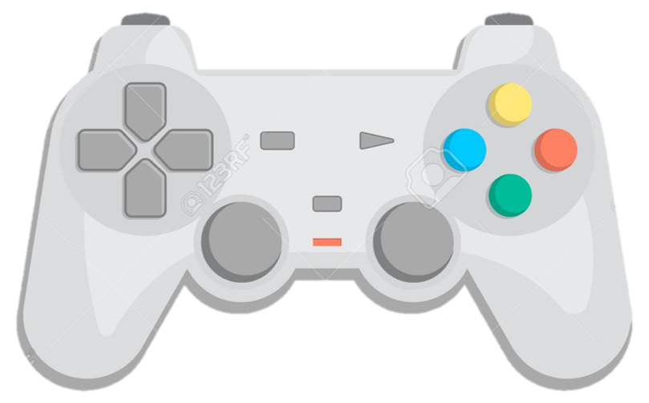

Prueba
Iniciemos la Prueba
>>> Escoge la respuesta correcta.
1) ¿ Cuantas silabas tiene la palabra "ESPIRALES"?
4
3
2
1
2) A la palabra ESPIRALES quitale la segunda silaba y escribe como quedad.
3) A la palabra FRI__RIFICO le hace falta una silaba cual es:
TE
ME
GO
SE
4) De las palabras "PLAZA" y "APLAUSO" cuales son las que suenan igual
AZA
SO
ZA
PLA
5) ¿Qué sonido o fonema suena igual en castana y codo?
6) Ordena las siguientes letras para formar palabras correcta "E O I N T L V E S I "
7) Con cuantas palabras cuenta la siguinte oracion "Mis amigos tienen muchos juegos"
8
10
5
6
8) Separa con guines (-) la siguiente oracion "Todossomoscapacesdecumplirlossueños"
9) Observa la imagen y contesta
b
p
b
p
b
p
p
p
b
"P"
"B"
10) Ordena las siguientes letras para formar palabras correcta "I G A L"
11) ¿Cual es e nombre correcto de la imagen?

Mamdo
Marco
Mando
Manco
12) Coloca la palabra inversa de "CELULAR"
13) Ordena las siguientes letras para formar palabras correcta "O V I E I R D T D"
14) ¿Cual de las siguientes palabras existe?
Bravo
Brado
Brano
Cravo
15) Coloca la palabra inversa de "ALIMENTAR"
16) ¿ Cuantas silabas tiene la palabra "PLURALIZACION"?
9
7
6
5
17) Ordena las siguientes letras para formar palabras correcta "A M O V I U T L O"
18) ¿ Cuantas silabas tiene la palabra "ELECTROCARDIOGRAMA"?
9
8
6
7
13
19) Coloca la palabra inversa de "OVOVIVIPARO"
20) Ordena las siguientes letras para formar palabras correcta "C T R O E L S C T I E D O M E O"